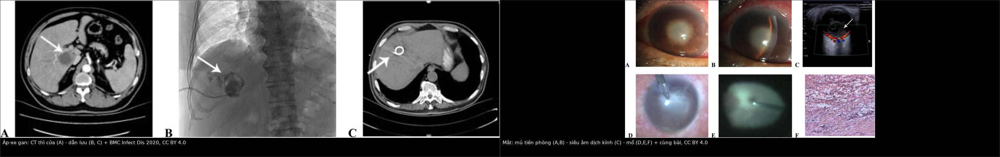
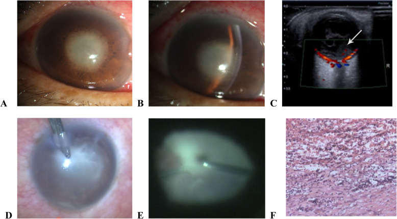
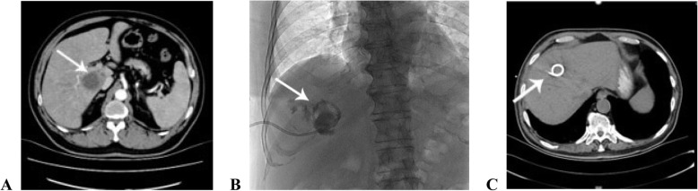

1420 — Áp-xe gan do Klebsiella kèm viêm nội nhãn nội sinh: thứ tự và cửa sổ can thiệp / Klebsiella liver abscess with endogenous endophthalmitis: sequence and timing
Tags: pattern:ap-xe-gan pattern:viem-noi-nhan pattern:ap-xe-duoi-vong-mac pattern:viet-dich-kinh vung:gan vung:vong-mac vung:hac-mac score:khong protocol:CT-bung protocol:soi-day-mat protocol:tiem-noi-nhan protocol:cat-dich-kinh incidentaloma:khong
Mức chắc chắn (certainty): tổng hợp y văn (literature synthesis) — 1 đoàn hệ 16 bệnh nhân/19 mắt viêm nội nhãn do áp-xe gan (BMC Infect Dis 2020, PMC7487656, CC BY 4.0), 1 đồng thuận Đài Loan 2024 về viêm nội nhãn nội sinh (PMC10776529, CC BY-NC 4.0), 1 đoàn hệ K. pneumoniae nội nhãn 12 bệnh nhân/15 mắt (PMC11549328, CC BY-NC 3.0), 1 nghiên cứu tiên lượng thị lực theo loại viêm nội nhãn (PMC9714883, CC BY 4.0) và 1 nghiên cứu CT dự báo nguy cơ mắt (PMC9369040, CC BY 4.0). Ca trong quiz là ca nguyên văn của PMC7487656 — ghi rõ trong đáp án.
Bài này trả lời 4 câu hỏi khi một bệnh nhân áp-xe gan đột nhiên mờ mắt: (1) Tiêm nội nhãn trước hay dẫn lưu gan trước? (2) Cửa sổ vàng là bao nhiêu giờ, và cái gì mất đi khi trễ? (3) Khi nào cắt dịch kính — ngay lần khám đầu hay chờ 24 giờ? (4) Vì sao đã làm "đủ" mà 1/3 mắt vẫn không đếm được ngón tay? Nối 103 – Áp-xe gan do Klebsiella (đọc CT, ngưỡng dẫn lưu), 475 – Viêm nội nhãn nội sinh do vi khuẩn (cơ chế "tiền phòng im lặng") và 463 – Viêm nội nhãn nội sinh do nấm (thể tiến triển tuần).
1. Tổng quan — vì sao đây là bài toán THỜI GIAN, không phải bài toán chọn kháng sinh
1.1 Hai khoang nhiễm, hai dược động học ngược nhau
- Khoang gan: ổ mủ lớn (đường kính trung bình 7,93 ± 2,32 cm trong loạt 100 ca — bài 103/PMC7296744), có vỏ xơ–fibrin và không có mao mạch bên trong → kháng sinh toàn thân không vào được trung tâm ổ; cách duy nhất để "giảm tải" vi khuẩn là dẫn lưu cơ học (source control).
- Khoang dịch kính: gel vô mạch, thể tích ~4 mL, không có hệ miễn dịch tại chỗ; hàng rào máu–dịch kính cản thuốc → kháng sinh tĩnh mạch dù có thấm tốt cũng đạt nồng độ điều trị chậm trong nhiều giờ (đồng thuận Đài Loan, PMC10776529). Vì vậy tiêm nội nhãn (intravitreal injection — IVI) là bước không thể thay thế, và không được chờ kết quả cấy.
- Hệ quả logic: dẫn lưu gan không làm sạch dịch kính, và tiêm nội nhãn không kiểm soát được ổ gan. Hai việc phải chạy song song trong cùng ngày, không phải "làm xong gan rồi mới đến mắt".
1.2 Vì sao cửa sổ chỉ khoảng 48 giờ
- Thực nghiệm trên thỏ: tế bào cảm thụ ánh sáng (photoreceptor) bị phá hủy không hồi phục trong 48 giờ khi Klebsiella xâm nhập dịch kính (dẫn qua Lee JJ 2022 trong bài 475).
- Trong loạt 16 bệnh nhân/19 mắt: tiêm nội nhãn trong 48 giờ đầu giúp giữ thị lực ở một số mắt; nhóm tiêm sau 48 giờ có thị lực cuối kém hơn (BMC Infect Dis 2020, PMC7487656). Đây là mốc sinh học, không phải mốc hành chính.
- Sau 48 giờ, phẫu thuật vẫn có chỉ định (lấy mủ, cắt màng, giải phóng co kéo) nhưng không lấy lại được võng mạc đã hoại tử — giải thích vì sao kết cục vẫn xấu dù "đã mổ".
1.3 Ngưỡng định lượng nằm lòng
| Chỉ số | Con số | Nguồn |
|---|---|---|
| Cửa sổ tiêm nội nhãn có lợi | ≤ 48 giờ từ khởi phát | BMC Infect Dis 2020 (PMC7487656) |
| Thị lực cuối ≥ đếm ngón tay (CF) trong loạt áp-xe gan | 31% (6/19 mắt); chỉ 5% (1/19) đạt 20/200 | cùng nguồn |
| Thị lực cuối không còn cảm giác ánh sáng (NLP) | 31% (6/19 mắt) | cùng nguồn |
| Phải khoét nhãn cầu (evisceration) | 3/19 mắt (16%) do viêm tái phát | cùng nguồn |
| K. pneumoniae trong cấy | 50% (8/16 bệnh nhân); cấy âm 32% (5/16) | cùng nguồn |
| Thời gian nằm viện trung bình | 18,75 ngày (6–37) | cùng nguồn |
| Viêm nội nhãn K. pneumoniae — hai mắt | 25% (3/12 bệnh nhân) | Risk Manag Healthc Policy 2024 (PMC11549328) |
| Tăng nhãn áp trong tuần đầu ở thể K. pneumoniae | 73,3% (11/15 mắt) | cùng nguồn |
| NLP cuối ở thể K. pneumoniae | 66,7% (10/15 mắt); khoét nhãn cầu 26,7% (4/15) | cùng nguồn |
| Số mắt không cải thiện thị lực ở nhóm viêm nội nhãn nội sinh | Không khác biệt trước–sau điều trị (logMAR) | PLoS One 2022 (PMC9714883) |
| Ngưỡng dẫn lưu ổ gan | > 5 cm: catheter là first-line; < 3 cm: kháng sinh + theo dõi 48–72 giờ | bài 103 (PMC13170020) |
- Vì sao thể K. pneumoniae tệ hơn thể ngoại sinh: vỏ polysaccharide + biofilm chống thực bào, thể tăng độc lực (hvKP) xuyên hàng rào máu–mắt nhanh; ổ mủ dưới võng mạc lan rộng trước khi tiền phòng phản ứng. Trong loạt PMC11549328, 73,3% mắt đã tăng nhãn áp ngay tuần đầu — dấu hiệu viêm nặng lan ra thể mi, không phải "viêm nhẹ".
- TẠI SAO CT bụng lại là công cụ dự báo mắt: xâm lấn mạch lân cận của ổ áp-xe làm tăng nguy cơ viêm nội nhãn OR 148,1; ổ hai thùy OR 45,1, thùy trái OR 19,6, đái tháo đường OR 11,6 (PMC9369040). Đây là lý do phải ghi rõ các dấu hiệu này trong báo cáo CT — không phải để chẩn đoán mắt, mà để gọi khám mắt ngay.
2. Mẫu hình + gamut theo THỨ TỰ xuất hiện (khi nào gọi ai)
- A. "Mắt trước, gan sau" (eye-first): bệnh nhân vào vì mờ mắt 1–3 ngày, sốt nhẹ; chưa ai nghĩ tới gan. Trong loạt 16 ca, 56% (9/16) được chẩn đoán ban đầu là viêm nội nhãn, chỉ 38% (6/16) là áp-xe gan (PMC7487656). Đây là kịch bản bỏ sót ổ gan nếu chỉ khám mắt.
- B. "Gan trước, mắt im lặng" (liver-first/silent eye): đã có áp-xe gan trên CT, bệnh nhân chưa kêu mờ mắt. Đồng thuận Đài Loan khuyến cáo soi đáy mắt giãn đồng tử cho MỌI bệnh nhân áp-xe gan sinh mủ; 25% ca K. pneumoniae có hai mắt (PMC11549328) → phải khám cả hai mắt, không chỉ mắt bệnh nhân phàn nàn.
- C. "Đồng thời" (simultaneous): sốt + đau hông lưng phải + mờ mắt trong cùng 24–48 giờ; CT và soi đáy mắt cùng lúc. Đây là nhóm thuận lợi nhất để cứu mắt vì không mất thời gian tìm nguyên nhân.
- D. "Xấu đi sau 24 giờ" (deterioration): đã tiêm nội nhãn + kháng sinh toàn thân, nhưng viêm dịch kính tăng hoặc thị lực giảm → cắt dịch kính (pars plana vitrectomy — PPV). Đây là chỉ định theo đồng thuận, không phải theo cảm giác.
- E. "Mắt đã cháy" (burned-out): NLP, đau, nhãn cầu teo; khoét nhãn cầu để giảm đau, nhưng vẫn phải điều trị ổ gan vì nguy cơ tử vong do nhiễm trùng huyết.
- Mnemonic "GAN–MẮT–48": Gan (dẫn lưu) · Mắt (tiêm nội nhãn ngay) · 48 giờ · Ắp-xe hai thùy/thùy trái (nguy cơ cao) · Tăng nhãn áp tuần đầu (dấu hiệu nặng).
3. Bảng so sánh phân biệt — chọn hành động theo tình huống lúc vào
| Tình huống lúc vào | Chốt vào (rule-in) | Chốt loại (rule-out) | Hành động + thời hạn | Bằng chứng |
|---|---|---|---|---|
| Mờ mắt + sốt, chưa rõ ổ ngoài mắt | Mủ dịch kính / ổ mủ dưới võng mạc trên soi đáy mắt; siêu âm B có hạt lơ lửng khi không thấy đáy mắt | Tiền phòng sạch không loại trừ (tổn thương hậu cực có thể nặng hơn tiền phòng); không có ổ ngoài mắt không loại trừ thể ẩn | Cấy máu 2 bộ + tiêm nội nhãn NGAY (≤ 48 giờ, tốt nhất ≤ 6 giờ); CT bụng 4 pha song song | PMC7487656; PMC10776529 |
| Đã biết áp-xe gan, chưa có triệu chứng mắt | Soi đáy mắt giãn đồng tử 2 bên; nếu có dấu viêm → vào nhánh trên | Đáy mắt bình thường 2 bên → chưa loại trừ tuyệt đối, vẫn dặn báo ngay khi mờ mắt | Soi đáy mắt trong 24 giờ cho mọi áp-xe gan sinh mủ; dặn bệnh nhân báo ngay khi mờ mắt | PMC10776529 (khuyến cáo sàng lọc); PMC11549328 (25% hai mắt) |
| Cả hai ổ cùng lúc, bệnh nhân sốc nhiễm trùng | Huyết áp + lactate + ổ gan có khí; mắt có viêm dịch kính | Không có sốc → vẫn ưu tiên mắt như nhánh trên | Tiêm nội nhãn tại giường trước, kháng sinh tĩnh mạch trong 1 giờ; dẫn lưu gan ngay khi huyết động cho phép, không chờ mắt ổn định | PMC7487656; PMC10776529 |
| Đã tiêm nội nhãn 24 giờ, thị lực xấu đi | Viêm dịch kính tăng hoặc thị lực giảm ≥ 1 dòng so với lúc tiêm | Đang cải thiện rõ + đáy mắt nhìn được → tiếp tục theo dõi | Cắt dịch kính trong 24 giờ tiếp theo (không chờ thêm) | PMC10776529 (khuyến cáo mức đồng thuận) |
| Viêm dịch kính ĐẶC che đĩa thị và cung mạch ngay lần đầu | Không thấy đĩa thị/cung mạch do mủ; siêu âm B có màng/dày dịch kính | Còn nhìn rõ đĩa thị → chưa cần mổ ngay | Cắt dịch kính sớm ngay lần khám đầu, không chờ 24 giờ | PMC10776529 |
| Mắt NLP + đau + teo nhãn cầu | NLP, nhãn áp thấp, viêm tái phát dù đã IVI/PPV | Còn cảm giác ánh sáng → còn cơ hội bảo tồn | Khoét nhãn cầu giảm đau; vẫn kiểm soát ổ gan và kháng sinh | PMC7487656 (3/19 mắt) |

Trái: CT thì cửa — ổ giảm đậm độ thùy phải có vách (A), dẫn lưu catheter (B), ổ xẹp sau dẫn lưu (C). Phải: mắt cùng bệnh nhân — mủ tiền phòng/fibrin (A, B), siêu âm 3D dịch kính đục (C), mủ tiền phòng và dịch kính khi mổ (D, E), mô bệnh viêm mủ (F). Nguồn: BMC Infect Dis 2020, PMC7487656, CC BY 4.0; ảnh ghép letterbox, không crop.Đọc ảnh — hai bờ của một bệnh, không phải hai ca riêng
- Ổ gan (A): giảm đậm độ không đồng nhất, bờ đa cung, có vách — đúng mô tả Klebsiella ở bài 103; không phải nang đơn thuần. Phải đo đường kính lớn nhất, đếm số ổ, tìm khí, huyết khối tĩnh mạch gan/cửa (dấu hiệu xâm lấn — OR 148,1 cho nguy cơ mắt).
- Dẫn lưu (B, C): catheter nằm trong ổ, ổ xẹp sau dẫn lưu — kiểm tra vị trí bằng X-quang/CT, không mặc định "đã dẫn lưu là xong".
- Mắt (A, B): mủ tiền phòng (hypopyon) + fibrin; đừng dùng mức mủ tiền phòng để ước lượng mức phá hủy hậu cực.
- Siêu âm (C): dịch kính có hạt/dải lơ lửng; khi không nhìn được đáy mắt, siêu âm là cách duy nhất phát hiện màng co kéo/bong võng mạc trước mổ.
4. Protocol — timeline 0–48 giờ và phân độ
4.1 Timeline tối thiểu (mỗi bước có mốc giờ)
| Mốc | Việc phải làm | Ngưỡng/ghi chú |
|---|---|---|
| T0 — nghi ngờ | Cấy máu 2 bộ trước kháng sinh; soi đáy mắt giãn đồng tử 2 mắt; siêu âm B nếu không thấy đáy mắt | Không chờ cấy để tiêm |
| T0 + ≤ 1 giờ | IVI: vancomycin 1 mg/0,1 mL + ceftazidime 2,25 mg/0,1 mL ± dexamethasone 0,2 mg/0,1 mL; kháng sinh tĩnh mạch phổ rộng | Đúng liều trong loạt PMC7487656; không dùng liều "ước lượng" |
| T0 + 0–6 giờ | CT bụng 4 pha (không cản quang, động mạch, cửa, muộn) | Đo ổ, tìm khí, vách, huyết khối tĩnh mạch gan/cửa |
| T0 + ≤ 24 giờ | Dẫn lưu gan nếu > 5 cm, có khí, đa ổ/vách dày; catheter ưu tiên hơn kim | Song song với mắt; không "chờ mổ mắt xong" |
| 12–24 giờ | Đánh giá lại thị lực + độ đục dịch kính | Xấu đi hoặc viêm tăng → PPV |
| 24–48 giờ | Nếu không cải thiện và không mổ được ngay: IVI lặp lại theo đáp ứng | Cửa sổ vàng đã qua → tư vấn tiên lượng thật |
| 1 tuần | Nhãn áp 2 mắt, soi lại đáy mắt, kiểm tra catheter | 73,3% thể K. pneumoniae tăng nhãn áp tuần đầu (PMC11549328) |
| 1–3–6 tháng | Thị lực cuối, đánh giá khoét nhãn cầu nếu đau/NLP | Kết cục chốt ở 6 tháng trong loạt PMC7487656 |
flowchart TD
A["Áp-xe gan + mờ mắt"] --> B["Cấy máu 2 bộ + soi đáy mắt 2 bên"]
B --> C["Tiêm nội nhãn ≤ 1 giờ<br/>vancomycin 1 mg + ceftazidime 2,25 mg"]
C --> D["CT bụng 4 pha + kháng sinh tĩnh mạch"]
D --> E{"Ổ > 5 cm, có khí,<br/>đa ổ/vách?"}
E -->|Có| F["Dẫn lưu catheter ≤ 24 giờ"]
E -->|Không| G["Kháng sinh + theo dõi 48-72 giờ"]
C --> H{"Viêm dịch kính đặc<br/>che đĩa thị?"}
H -->|Có| I["Cắt dịch kính ngay lần đầu"]
H -->|Không| J{"Sau 24 giờ xấu đi?"}
J -->|Có| I
J -->|Không| K["Tiếp tục kháng sinh + soi lại 24 giờ"]
I --> L["Theo dõi nhãn áp, thị lực 1-3-6 tháng"]
K --> L
4.2 Phân độ và ngưỡng quyết định
- Phân độ viêm nội nhãn: dùng phân loại lâm sàng theo mức dịch kính (đục nhẹ / đục vừa nhìn được đĩa thị / đục đặc không thấy đĩa thị) — mốc "không thấy đĩa thị và cung mạch" là ngưỡng mổ sớm, không cần chờ đủ 24 giờ (PMC10776529).
- Phân độ ổ gan: theo kích thước (> 5 cm / 3–5 cm / < 3 cm) + khí + vách + huyết khối mạch (bài 103).
- Phân độ toàn thân: sốc nhiễm trùng/lactate quyết định thứ tự ở bệnh nhân không thể nằm mổ mắt ngay — vẫn tiêm nội nhãn tại giường trước khi chuyển phòng mổ.
4.3 Protocol chẩn đoán hình ảnh (vai trò của CĐHA)
- CT bụng 4 pha là chuẩn: mô tả ổ giảm đậm độ trung tâm ở MỌI thì, ngấm viền, vách ≥ 1 mm, khí, và khuyết ngấm trong tĩnh mạch gan/cửa.
- Không dùng CT/MRI sọ–mắt để chẩn đoán viêm nội nhãn thay soi đáy mắt; MRI hốc mắt chỉ khi nghi áp-xe hốc mắt/viêm mô tế bào (khác bệnh cảnh).
- Siêu âm B là bạn của CĐHA khi đục dịch kính: phát hiện màng, bong võng mạc, dày dịch kính — giúp chọn mổ.
5. Biến thể bình thường và cạm bẫy
- "Tiền phòng sạch" không loại trừ: phản ứng tiền phòng không tỉ lệ với tổn thương hậu cực; thể Klebsiella có thể đã có ổ mủ dưới hoàng điểm mà tiền phòng chỉ hypopyon nhẹ (bài 475; PMC10776529 Fig. 1). → luôn soi đáy mắt giãn đồng tử.
- "Đợi dẫn lưu gan rồi tiêm mắt": sai thứ tự. Dẫn lưu gan có thể mất vài giờ (chuẩn bị, gây tê, huyết động); 48 giờ trôi qua trong lúc chờ. → IVI trước/đồng thời, dẫn lưu gan song song.
- "Chờ kết quả cấy": cấy máu âm 32% trong loạt PMC7487656; cấy dịch kính cũng có thể âm → âm tính không loại trừ, và không được hoãn tiêm.
- "Ổ gan nhỏ nên không cần khám mắt": nguy cơ mắt phụ thuộc vị trí/xâm lấn mạch (OR 148,1), hai thùy (OR 45,1), đái tháo đường (OR 11,6) — không chỉ kích thước. → sàng lọc mọi áp-xe gan sinh mủ.
- "Tăng nhãn áp là do corticoid": 73,3% mắt K. pneumoniae đã tăng nhãn áp trong tuần đầu, trước khi dùng steroid kéo dài → đây là dấu hiệu viêm nặng, không phải tác dụng phụ đơn thuần.
- "Thấy một mắt là đủ": 25% ca có hai mắt; khám cả hai mắt và dặn bệnh nhân báo ngay khi mắt còn lại mờ.
- Bẫy "đã mổ = đã cứu": chỉ 31% đạt CF hoặc tốt hơn, 31% còn NLP dù đã tiêm + mổ (PMC7487656) → tư vấn tiên lượng trước khi gia đình kỳ vọng quá mức.
6. Tự lượng giá — Blind Quiz
Ca 1 — Nam 56 tuổi, đái tháo đường 8 năm, sốt 5 ngày rồi mờ mắt trái 1 ngày. Nhìn ảnh mắt, mô tả trước khi bấm đáp án.

- Câu hỏi: (a) Dấu hiệu nào ở tiền phòng, dấu hiệu nào ở dịch kính? (b) Ba chẩn đoán phân biệt? (c) Việc đầu tiên trong 1 giờ tới là gì?
Bấm để hiện đáp án (findings + chẩn đoán)
- Findings: (A, B) mủ tiền phòng (hypopyon) + fibrin, phù giác mạc, xung huyết kết mạc; (C) siêu âm 3D: dịch kính đục dạng hạt/dải; (D, E) khi mổ: mủ tiền phòng và dịch kính, màng fibrin dính chặt; (F) mô bệnh thấm bạch cầu trung tính lan tỏa, hoại tử từng mảnh.
- Chẩn đoán: viêm nội nhãn nội sinh do Klebsiella từ áp-xe gan — cơ chế: vi khuẩn từ ổ gan vào tuần hoàn → lắng ở hắc mạc (mao mạch có lỗ cửa sổ) → ổ mủ dưới võng mạc → dịch kính.
- Việc đầu tiên: cấy máu 2 bộ + tiêm nội nhãn ngay (vancomycin 1 mg + ceftazidime 2,25 mg/0,1 mL), không chờ CT gan hay kết quả cấy; CT bụng chạy song song.
- Nguồn: BMC Infect Dis 2020;20:661, Fig. 2 — PMC7487656, CC BY 4.0. Ca nguyên văn trong loạt 16 bệnh nhân/19 mắt.
Ca 2 — Cùng bệnh nhân, CT bụng thì cửa. Nhìn ảnh, đo và mô tả trước.

- Câu hỏi: (a) Mô tả ổ (vị trí, bờ, vách, đậm độ); (b) có chỉ định dẫn lưu không, vì sao? (c) Dẫn lưu gan trước hay tiêm mắt trước?
Bấm để hiện đáp án (findings + chẩn đoán)
- Findings: (A) ổ giảm đậm độ không đồng nhất ở thùy phải, bờ đa cung, có vách; (B) catheter dẫn lưu nằm trong ổ; (C) sau dẫn lưu ổ xẹp, catheter đúng vị trí. Không thấy khí trong ổ ở lát này.
- Chẩn đoán: áp-xe gan sinh mủ do Klebsiella — bờ đa cung + cấu trúc không đồng nhất + đái tháo đường là bộ ba gợi ý (bài 103).
- Chỉ định dẫn lưu: ổ lớn hơn 5 cm (bài 103) → catheter dẫn lưu + kháng sinh; ổ đa ổ/vách dày cũng ưu tiên catheter hơn chọc hút kim.
- Thứ tự: tiêm nội nhãn trước/đồng thời, dẫn lưu gan song song — không chờ dẫn lưu xong mới tiêm mắt; cửa sổ mắt là 48 giờ, dẫn lưu gan không phải điều kiện tiên quyết.
- Nguồn: BMC Infect Dis 2020;20:661, Fig. 1 — PMC7487656, CC BY 4.0. Ngưỡng dẫn lưu: bài 103.
Ca 3 — Bệnh nhân áp-xe gan đã dẫn lưu 3 ngày, đột nhiên mờ mắt phải; soi đáy mắt không thấy đĩa thị vì mủ đặc. Bạn làm gì trong 24 giờ?
Bấm để hiện đáp án
- Chẩn đoán: viêm nội nhãn nội sinh tiến triển trong lúc điều trị ổ gan — không phải "viêm màng bồ đào do kháng sinh".
- Hành động: tiêm nội nhãn ngay + cắt dịch kính sớm ngay lần khám đầu vì viêm dịch kính đặc che đĩa thị/cung mạch (khuyến cáo PMC10776529) — không chờ 24 giờ.
- Sau mổ: kháng sinh toàn thân theo cấy, nhãn áp (nguy cơ tăng nhãn áp tuần đầu 73,3%), soi lại 2 mắt, theo dõi 1–3–6 tháng.
- Tiên lượng: phải nói rõ nguy cơ NLP 31–67% tùy loạt và khoét nhãn cầu 16–27% — không hứa "mổ là thấy".
- Nguồn: PMC10776529; PMC7487656; PMC11549328.
Bài liên quan chéo
- 103 – Áp-xe gan do Klebsiella: đọc CT, phân tầng nguy cơ, ngưỡng dẫn lưu
- 475 – Viêm nội nhãn nội sinh do vi khuẩn: "tiền phòng im lặng"
- 463 – Viêm nội nhãn nội sinh do nấm: thể tiến triển tuần
- 474 – Kháng nấm nội nhãn: chọn thuốc theo loại nấm
Không dùng để chẩn đoán độc lập khi chưa có người hướng dẫn.